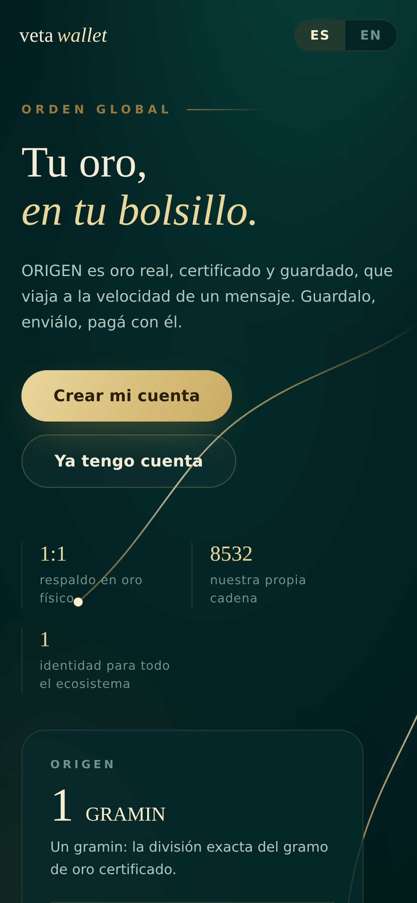

Orden Global · Veta Wallet
De dólaresa oro.
Cambiá tu saldo por ORIGEN en segundos, desde el teléfono. Sin ventanilla y sin horario.
$USD

AU999.9
Oro real, certificado y guardado. Respaldo 1:1.


Descargá la app